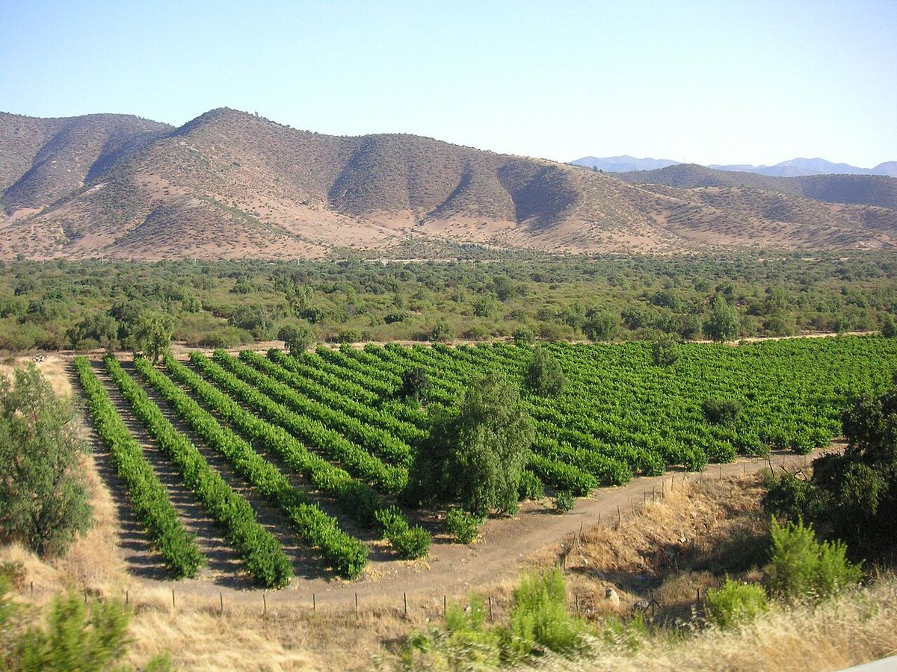

Chile
Chile es un país vitícola largo y estrecho, encerrado entre los Andes y el Pacífico, que nunca sufrió la filoxera. Es conocido por sus Cabernet Sauvignon del Maipo, por la Carmenère y, cada vez más, por los vinos frescos de la costa y por las viñas viejas del sur.

Historia
La vid llegó a Chile a mediados del siglo XVI con los conquistadores y los misioneros españoles. La variedad que plantaron, la uva País, idéntica a la Listán Prieto canaria, dominó el viñedo durante siglos y servía para elaborar vino de misa y vino de consumo corriente. A mediados del siglo XIX, terratenientes enriquecidos por la minería y la agricultura, inspirados por Francia, importaron cepas bordelesas como la Cabernet Sauvignon, la Merlot, la Malbec y la Carmenère, y contrataron técnicos franceses; así nacieron las grandes viñas históricas en torno a Santiago, muchas de ellas en el valle del Maipo.
Estas plantaciones se hicieron poco antes de que la filoxera devastara Europa. Gracias a sus barreras naturales, Chile nunca se vio afectado por la plaga, por lo que la mayor parte de sus viñas se cultiva aún sobre pie franco. Durante gran parte del siglo XX la producción se orientó al mercado interno, con un marco legal restrictivo y poca inversión. Desde los años ochenta, con la llegada del acero inoxidable, la barrica nueva y capital extranjero, comenzó un rápido crecimiento orientado a la exportación. En 1994 el ampelógrafo francés Jean-Michel Boursiquot identificó como Carmenère muchas viñas que se cultivaban como Merlot, y esa variedad casi olvidada en Europa se convirtió en una seña de identidad chilena.
Geografía y clima
El país se extiende más de 4.000 kilómetros de norte a sur, pero rara vez supera los 200 de ancho. Sus viñedos están aislados por el desierto de Atacama al norte, los Andes al este, el océano Pacífico al oeste y los hielos patagónicos al sur. El clima de las principales zonas es mediterráneo, con inviernos lluviosos y veranos secos y soleados. La corriente de Humboldt, fría, refresca la costa y genera nieblas matinales, mientras que el aire que desciende de la cordillera enfría las noches en los valles interiores. Por eso las diferencias de clima entre la costa y la montaña son tan importantes como las que existen de norte a sur.
Suelos
En el valle central dominan los suelos aluviales y coluviales de origen andino, con gravas, arenas y arcillas; en la cordillera de la Costa aparecen suelos graníticos y, en algunas zonas, esquistos y pizarras. Hacia el sur, en Itata y Biobío, abundan los suelos de granito descompuesto y los de origen volcánico.
Regiones
La normativa de denominaciones de origen, vigente desde mediados de los años noventa, divide el país en grandes regiones, subregiones y zonas: Atacama y Coquimbo en el norte, con los valles de Elqui y Limarí; Aconcagua, que incluye los valles de Aconcagua, Casablanca y San Antonio; el Valle Central, con el Maipo, el Rapel (Cachapoal y Colchagua), Curicó y el Maule; y la Región del Sur, con Itata, Biobío y Malleco, además de zonas australes de pequeña superficie. Desde comienzos de la década de 2010 las etiquetas pueden añadir las menciones Costa, Entre Cordilleras y Andes, que reflejan la división del territorio de oeste a este.
Variedades y estilos
La Cabernet Sauvignon es la tinta más plantada y da en el Maipo vinos de gran reputación, a menudo con notas de cassis y de hierbas. La Carmenère aporta tintos de color intenso, fruta madura y un característico toque especiado y herbáceo. También destacan la Merlot, la Syrah, la Pinot Noir de las zonas costeras y la Cariñena de viñas viejas del Maule. En el sur, la País y la Cinsault de viñas de secano centenarias han vivido un notable renacimiento. Entre las blancas sobresalen la Sauvignon Blanc y la Chardonnay de los valles costeros, como Casablanca, San Antonio y Limarí, y la Moscatel de Alejandría tradicional del sur y del norte, donde también se destina al pisco.
Regiones y denominaciones
Valle del Maipo
Denominación de Origen (subregión) · El valle del Maipo, que rodea Santiago, es la cuna de la viticultura chilena moderna y la zona más asociada a la Cabernet Sauvignon del país. Allí se encuentran muchas de las viñas históricas fundadas en el siglo XIX.
Valle de Colchagua
Denominación de Origen (zona del Valle del Rapel) · El valle de Colchagua, en la parte sur del valle del Rapel, es una de las zonas tintas más conocidas de Chile. Apalta, con sus laderas en forma de herradura, es su sector más célebre.
Valle de Casablanca
Denominación de Origen (subregión) · El valle de Casablanca, entre Santiago y Valparaíso, fue la primera gran zona costera fría de la viticultura chilena. Es conocido por sus Sauvignon Blanc, Chardonnay y Pinot Noir.
Valle del Aconcagua
Denominación de Origen (región y subregión) · El valle del Aconcagua, al norte de Santiago, toma su nombre del río Aconcagua, que desciende de los Andes no lejos de la montaña más alta de América. Combina un sector interior cálido, de tradición tinta, con viñedos costeros recientes de clima fresco.
Valle del Maule
Denominación de Origen (subregión) · El valle del Maule, en el extremo sur del Valle Central, es la zona con mayor superficie de viñedo de Chile. Junto a la producción a gran escala, conserva viñas viejas de secano de Cariñena y País que han dado lugar a algunos de los vinos más originales del país.
Valle del Itata
Denominación de Origen (subregión) · El valle del Itata, en la Región del Sur de Chile, es una de las cunas de la viticultura del país. Sus viñas viejas de secano de País, Cinsault y Moscatel de Alejandría, cultivadas por pequeños viticultores, han sido redescubiertas en las últimas dos décadas.